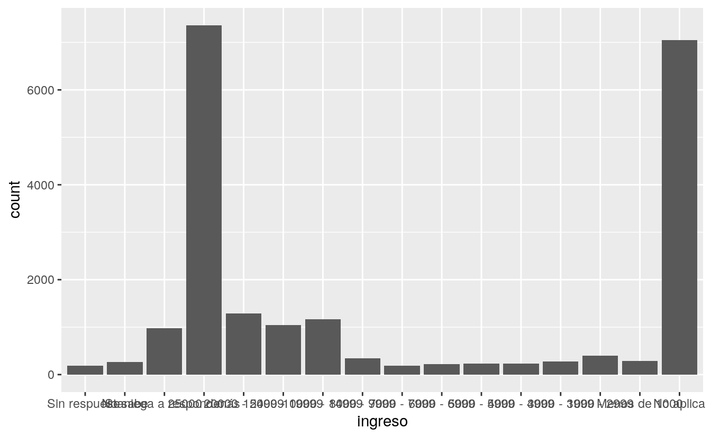
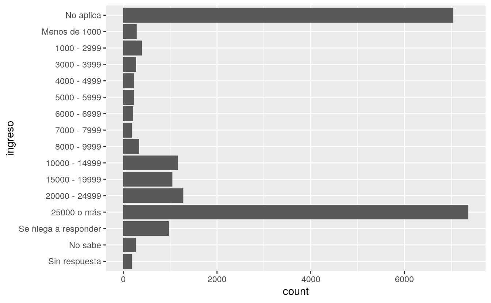
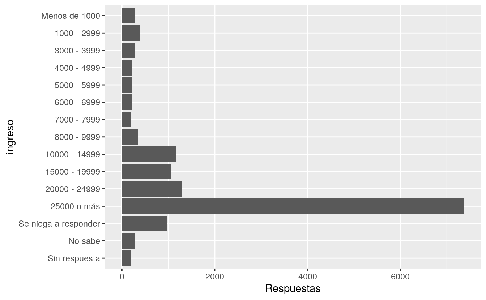

15 Factores
15.3 Encuesta social general
15.3.1 Ejercicios
- Explora la distribución de
ingreso. ¿Qué hace que el gráfico de barras por defecto sea tan difícil de comprender? ¿Cómo podrías mejorarlo?
Solución
Este es el gráfico por defecto:
ggplot(encuesta) +
aes(ingreso) +
geom_bar()
Resulta difícil de leer porque las etiquetas de los valores son muy largas. Una opción para resolver esto sería girando el gráfico. Esto se puede hacer con coord_flip() o, en la última versión de ggplot, moviendo la variable de eje:
ggplot(encuesta) +
aes(ingreso) +
geom_bar() +
coord_flip()
# es lo mismo que
ggplot(encuesta) +
aes(y = ingreso) +
geom_bar()
En este caso particular no tendría tanto sentido ordenar las barras de forma ascendente o descente, ya que los datos ya tienen un orden. Algo que sí podríamos hacer es eliminar “No aplica” y cambiar el nombre de la etiqueta del eje x:
encuesta %>%
filter(ingreso != "No aplica") %>%
ggplot() +
aes(y = ingreso) +
geom_bar() +
labs(x = "Respuestas")
- ¿Cuál es la
religionmás común de la encuesta? ¿Cuál es elpartidomás común?
Solución
Una forma de encontrar el valor con mayor frecuencia sería contando con count() y luego ordenando de mayor a menor con arrange(desc()) para ver cuál queda primero. Otra opción es utilizar la función top_n(), también del paquete dplyr.
La religión más común es “Protestante”:
encuesta %>%
count(religion) %>%
top_n(1)
#> Selecting by n
#> # A tibble: 1 × 2
#> religion n
#> <fct> <int>
#> 1 Protestante 10846El valor más común en partido es “Independiente”:
encuesta %>%
count(partido) %>%
top_n(1)
#> Selecting by n
#> # A tibble: 1 × 2
#> partido n
#> <fct> <int>
#> 1 Independiente 4119- ¿A qué
religionse aplica cadadenominacion? ¿Cómo puedes encontrarlo con una tabla? ¿Cómo lo puedes descubrir con una visualización?
Solución
Una forma de hacerlo sería contar las combinaciones de religión y denominación, lo que nos entregaría una tabla en la que podríamos ver cada cruce (por ejemplo, con encuesta %>% count(religion, denominacion)). Sin embargo, antes de hacer eso sería bueno eliminar los niveles que corresponden a una denominación: “Sin respuesta”, “No sabe”, “No aplica”, “No denominacional”:
encuesta %>%
filter(!denominacion %in% c("Sin respuesta", "No sabe", "No aplica", "No denominacional")) %>%
count(religion, denominacion)
#> # A tibble: 26 × 3
#> religion denominacion n
#> <fct> <fct> <int>
#> 1 Protestante Otra 2534
#> 2 Protestante Episcopal 397
#> 3 Protestante Presbiteriana, no sabe cuál 244
#> 4 Protestante Presbiteriana, fusionadas 67
#> 5 Protestante Otra presbiteriana 47
#> 6 Protestante Unión presbiteriana de iglesias 110
#> # … with 20 more rowsLas denominaciones corresponden a la religión Protestante. Podemos comprobar que es la única que aparece solo contando religion:
encuesta %>%
filter(!denominacion %in% c("Sin respuesta", "No sabe", "No aplica", "No denominacional")) %>%
count(religion)
#> # A tibble: 1 × 2
#> religion n
#> <fct> <int>
#> 1 Protestante 9559En una visualización lo podríamos descubrir con facet_wrap(). Podemos hacer un gráfico de columnas para la frecuencia de respuestas por cada denominación. Si faceteamos el gráfico según religión, solo nos aparecerá protestante porque en las otras religiones no hay valores.
encuesta %>%
filter(!denominacion %in% c("Sin respuesta", "No sabe", "No aplica", "No denominacional")) %>%
count(religion, denominacion) %>%
ggplot(aes(y = denominacion, x = n)) +
geom_col() +
facet_wrap(~religion)
Como se comentó antes en el capítulo, ggplot descarta los niveles no utilizados. Si quisieras que los mostrara igual, podrías agregar la opción drop = FALSE, aunque como son tantos los niveles de denominacion quedarían amontonadas las etiquetas y habría que editar el tamaño del gráfico para evitar este problema:
encuesta %>%
filter(!denominacion %in% c("Sin respuesta", "No sabe", "No aplica", "No denominacional")) %>%
count(religion, denominacion) %>%
ggplot(aes(y = denominacion, x = n)) +
geom_col() +
facet_wrap(~religion, drop = FALSE)
15.4 Modificar el orden de los factores
15.4.1 Ejercicios
- Hay algunos números sospechosamente grandes en
horas_tv. ¿Es la media un buen resumen?
Solución
Miremos los estadísticos de resumen y hagamos un histograma para explorar los datos:
summary(encuesta$horas_tv)
#> Min. 1st Qu. Median Mean 3rd Qu. Max. NA's
#> 0 1 2 3 4 24 10146
encuesta %>%
filter(!is.na(horas_tv)) %>%
ggplot(aes((horas_tv))) + geom_histogram(binwidth = 1)
Efectivamente, hay valores demasiado altos. Pareciera que hay personas que ven televisión todo el día y no duermen nunca, lo que es poco verosímil. Podría ser mejor utilizar la mediana como resumen. En todo caso, estos números anormalmente altos son bastante pocos.
- Identifica, para cada factor en
encuesta, si el orden de los niveles es arbitrario o responde a algún principio.
Solución
Primero, identifiquemos qué variables son factores. Una forma de hacerlo es utilizar select_if, que selecciona columnas de acuerdo a una condición, y luego extraer los nombres de las variables.
encuesta %>%
select_if(is.factor) %>%
names()
#> [1] "estado_civil" "raza" "ingreso" "partido" "religion"
#> [6] "denominacion"Ahora, revisemos los niveles de cada una de ellas.
En el caso de estado_civil pareciera que tenemos dos extremos: nunca se ha casado y casado, y entre ellas están agrupadas las categorías que hacen alusión a gente que estuvo casada, pero ya no.
levels(encuesta$estado_civil)
#> [1] "Sin respuesta" "Nunca se ha casado" "Separado"
#> [4] "Divorciado" "Viudo" "Casado"En la variable raza pareciera no haber ningún orden en particular:
levels(encuesta$raza)
#> [1] "Otra" "Negra" "Blanca" "No aplica"Si visualizamos los datos, es posible ver que los tres primeros niveles se ordenaron por frecuencia.
ggplot(encuesta, aes(raza)) + geom_bar() + scale_x_discrete(drop = FALSE)
ingreso está ordenado por rangos que van de mayor a menor.
levels(encuesta$ingreso)
#> [1] "Sin respuesta" "No sabe" "Se niega a responder"
#> [4] "25000 o más" "20000 - 24999" "15000 - 19999"
#> [7] "10000 - 14999" "8000 - 9999" "7000 - 7999"
#> [10] "6000 - 6999" "5000 - 5999" "4000 - 4999"
#> [13] "3000 - 3999" "1000 - 2999" "Menos de 1000"
#> [16] "No aplica"Los niveles de partido están ordenados a partir de más republicano a más demócrata.
levels(encuesta$partido)
#> [1] "Sin respuesta" "No sabe"
#> [3] "Otro partido" "Fuertemente republicano"
#> [5] "No fuertemente republicano" "Ind, pro rep"
#> [7] "Independiente" "Ind, pro dem"
#> [9] "No fuertemente demócrata" "Fuertemente demócrata"religión pareciera no tener ningún orden en particular:
levels(encuesta$religion)
#> [1] "Sin respuesta" "No sabe" "Inter o no confesional"
#> [4] "Nativa americana" "Cristiana" "Cristiana ortodoxa"
#> [7] "Musulmana/Islam" "Otra religión oriental" "Hinduismo"
#> [10] "Budismo" "Otra" "Ninguna"
#> [13] "Judía" "Católica" "Protestante"
#> [16] "No aplica"Si visualizamos para chequear, podemos confirmar el orden aleatorio:
ggplot(encuesta, aes(y = religion)) + geom_bar() + scale_x_discrete(drop = FALSE)
En el caso de denominacion, los niveles que pertencen a variantes de una denominacion (luterana, episcopal, metodista, etc.) están agrupados. Pero estos grupos entre sí no responden a un orden en particular:
levels(encuesta$denominacion)
#> [1] "Sin respuesta"
#> [2] "No sabe"
#> [3] "No denominacional"
#> [4] "Otra"
#> [5] "Episcopal"
#> [6] "Presbiteriana, no sabe cuál"
#> [7] "Presbiteriana, fusionadas"
#> [8] "Otra presbiteriana"
#> [9] "Unión presbiteriana de iglesias"
#> [10] "Iglesia presbiteriana de los EEUU"
#> [11] "Luterana, no sabe cuál"
#> [12] "Evangélica luterana"
#> [13] "Otras luteranas"
#> [14] "Sínodo evangélico luterano de Wisconsin"
#> [15] "Sínodo luterano"
#> [16] "Iglesia luterana de EEUU"
#> [17] "Iglesia luterana americana"
#> [18] "Metodista, no sabe cuál"
#> [19] "Otras metodistas"
#> [20] "Iglesia metodista unida"
#> [21] "Iglesia africana metodista episcopal de Sion"
#> [22] "Iglesia africana metodista episcopal"
#> [23] "Bautista, no sabe cuál"
#> [24] "Otras bautistas"
#> [25] "Bautistas del sur"
#> [26] "Convención nacional bautista de EEUU"
#> [27] "Convención nacional baptista de america"
#> [28] "Iglesias bautistas de EEUU"
#> [29] "Asociación bautista estadounidense"
#> [30] "No aplica"- ¿Por qué mover “No aplica” al inicio de los niveles lo llevó al final del gráfico?
Solución
15.5 Modificar los niveles de los factores
15.5.1 Ejercicios
- ¿Cómo han cambiado en el tiempo las proporciones de personas que se identifican como Demócratas, Republicanas e Independientes?
Solución
Para responder esta pregunta vamos a usar la versión de los datos que se muestran al final de esta sección en que los niveles de partido se agruparon con factor_collapse)
partido_anio <- encuesta %>%
mutate(partido = fct_collapse(partido,
otro = c("Sin respuesta", "No sabe", "Otro partido"),
republicano = c("Fuertemente republicano", "No fuertemente republicano"),
independiente = c("Ind, pro rep", "Independiente", "Ind, pro dem"),
demócrata = c("No fuertemente demócrata", "Fuertemente demócrata")
)) %>%
count(anio, partido)
ggplot(partido_anio) +
aes(anio, n, colour = partido) +
geom_line()
Sería mejor si más que el número de respuestas, graficáramos la proporción:
partido_anio %>%
group_by(anio) %>%
mutate(proporcion = n / sum(n)) %>%
ggplot() +
aes(anio, proporcion, colour = partido) +
geom_line()
- ¿Cómo podrías colapsar
ingresoen un grupo más pequeño de categorías?
Solución
Actualmente los niveles agrupan los datos de tres formas: tramos de mil, dos mil y cinco mil dólares:
levels(encuesta$ingreso)
#> [1] "Sin respuesta" "No sabe" "Se niega a responder"
#> [4] "25000 o más" "20000 - 24999" "15000 - 19999"
#> [7] "10000 - 14999" "8000 - 9999" "7000 - 7999"
#> [10] "6000 - 6999" "5000 - 5999" "4000 - 4999"
#> [13] "3000 - 3999" "1000 - 2999" "Menos de 1000"
#> [16] "No aplica"Una forma de colapsaros en menos categorías sería solo utilizar los tramos de 5000 dólares. Esto hace sentido si revisamos cómo se distribuyen los datos:
ggplot(encuesta) +
aes(y = ingreso) +
geom_bar()
Para la agrupación, podemos utilizar fct_collapse()
encuesta %>%
mutate(ingreso_reagrupado = fct_collapse(ingreso,
"Menos de 5000" = c("Menos de 1000", "1000 - 2999", "3000 - 3999", "4000 - 4999"),
"5000 - 9999" = c("5000 - 5999", "6000 - 6999", "7000 - 7999", "8000 - 9999"))) %>%
ggplot() +
aes(y = ingreso_reagrupado) +
geom_bar()

También podemos reagrupar “Sin respuesta”, “No sabe”, “Se niega a responder” y “No aplica” en una categoría a la que podríamos llamar “Desconocido” o “Sin información”. Editemos el código anterior para que refleje este cambio:
encuesta %>%
mutate(ingreso_reagrupado = fct_collapse(ingreso,
"Menos de 5000" = c("Menos de 1000", "1000 - 2999", "3000 - 3999", "4000 - 4999"),
"5000 - 9999" = c("5000 - 5999", "6000 - 6999", "7000 - 7999", "8000 - 9999"),
"Sin información" = c("Sin respuesta", "No sabe", "Se niega a responder", "No aplica")
)) %>%
ggplot() +
aes(y = ingreso_reagrupado) +
geom_bar()